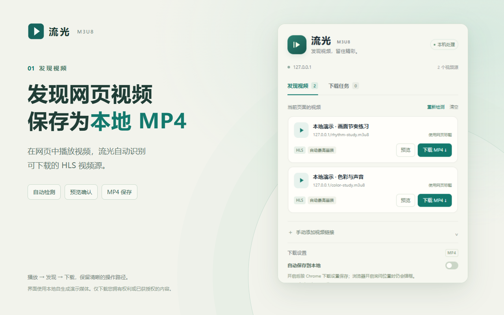

01 / DISCOVER
看见可下载的视频
按当前网页整理检测结果，预览画面后再选择。支持 HLS 清单和音视频分片，X 视频自动选择可用的高画质。
识别网页中的 HLS / M3U8 和 X 视频，支持手动添加 MP4 链接。先预览，再在本机下载、合并和保存。
按当前网页整理检测结果，预览画面后再选择。支持 HLS 清单和音视频分片，X 视频自动选择可用的高画质。
下载、解密和合并都在浏览器内运行。没有开发者上传服务器或统计追踪；媒体请求直接发往资源所属网站。
多任务同时下载，任务数无固定上限。可编辑文件名、使用网页标题、调整分片并发与重试，并选择保存位置。
图片使用本地生成的授权测试视频展示插件的实际界面。

请仅下载你拥有版权或已获许可保存的内容，并遵守网站条款。本扩展不绕过登录、付费访问、地域限制或 DRM，不持续录制直播；部分网站或编码可能不受支持。关闭扩展弹窗后任务继续，退出 Chrome 或重载扩展会中断未完成任务。